An archive of digital property rights infrastructure.
Bitmark was founded in 2014 to explore how ownership, rights, and participation could evolve in a digital world.
It was one of the earliest public blockchains. Over time, Bitmark was used in production by companies, institutions, and artists to register and manage digital assets, including health data, music rights, and digital art.
The Bitmark blockchain has now been shut down. Its history has been preserved through archival records and cryptographic proofs, with permanent references recorded across Ethereum, Bitcoin, and IPFS.
The ideas behind Bitmark continue in newer systems for digital ownership, including Ethereum smart contracts.